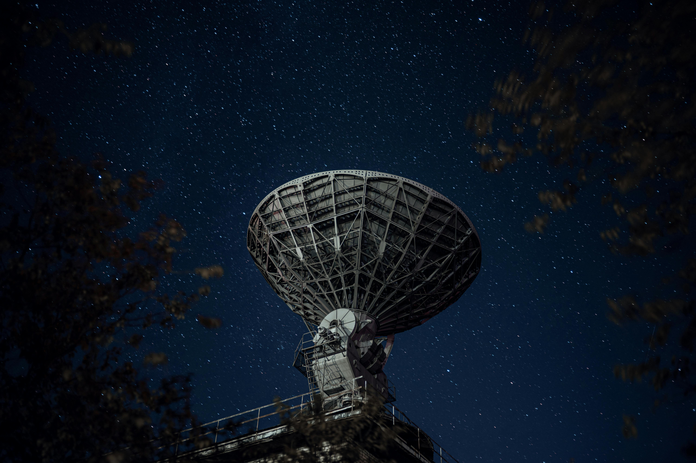

At Nebula Dynamics, we’re reimagining satellite technology to benefit industries far beyond space exploration. Our mission is to create eco-friendly, cutting-edge solutions that can be adapted for a wide range of sectors—from telecommunications to agriculture, transportation, and environmental monitoring. By leveraging sustainable materials, energy-efficient designs, and advanced propulsion systems, we’re developing satellites that not only reduce environmental impact but also offer greater versatility and reliability. Whether it's enabling global connectivity, improving climate monitoring, or enhancing resource management, Nebula Dynamics is leading the charge toward a future where space-based technology supports a greener, more sustainable planet for all industries.
So, we understand the 'what', but...
TAs industries around the world look for sustainable and efficient solutions, satellite technology and space research are emerging as key drivers for eco-friendly business operations and faster, more reliable internet access. With innovative advancements in satellite design, companies can now harness the power of low Earth orbit to reduce energy consumption, lower carbon footprints, and improve operational efficiency. Space-based technology offers eco-conscious alternatives by utilizing renewable energy sources, optimizing resource management, and enhancing communication networks. Satellites in low Earth orbit can deliver faster internet speeds with less latency, especially to remote and rural areas, unlocking new opportunities for global connectivity. By combining sustainability with cutting-edge space research, businesses can accelerate their digital transformation while contributing to a greener, more connected future.
Satellites are more fuel efficient than a Prius.